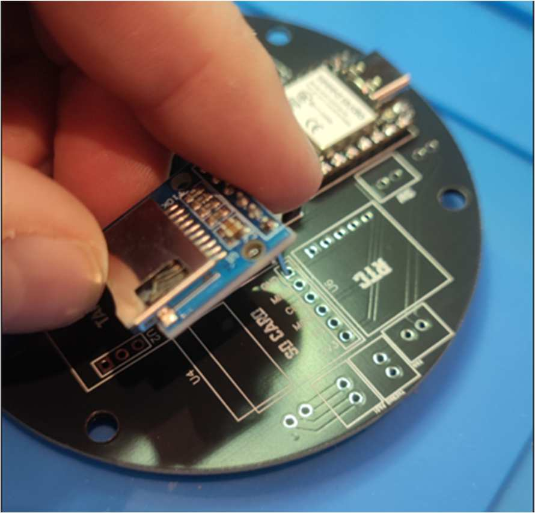
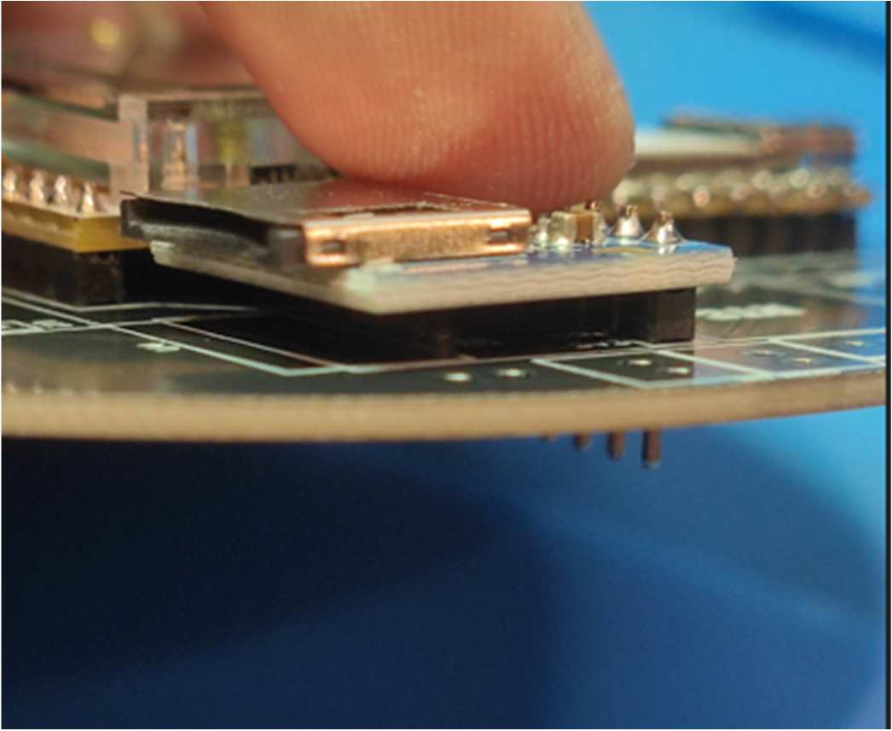
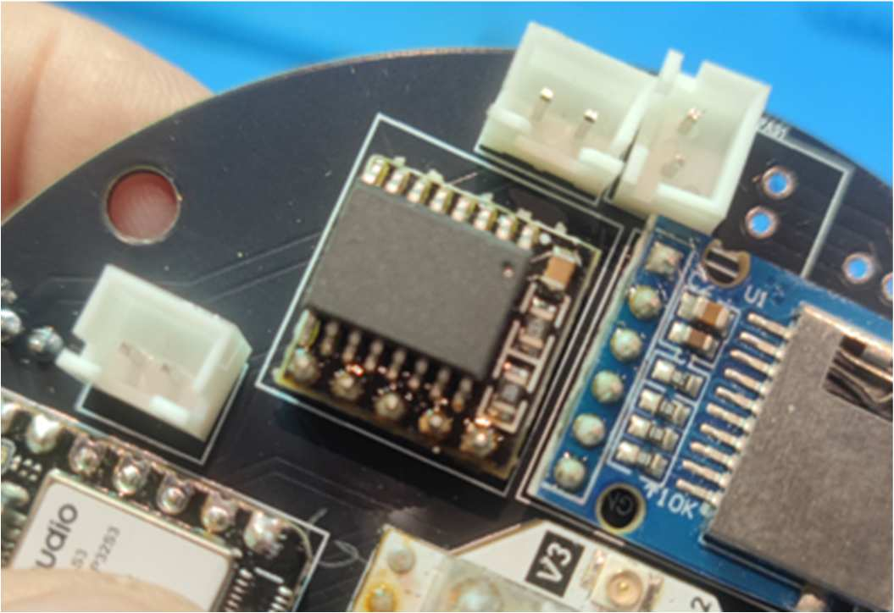
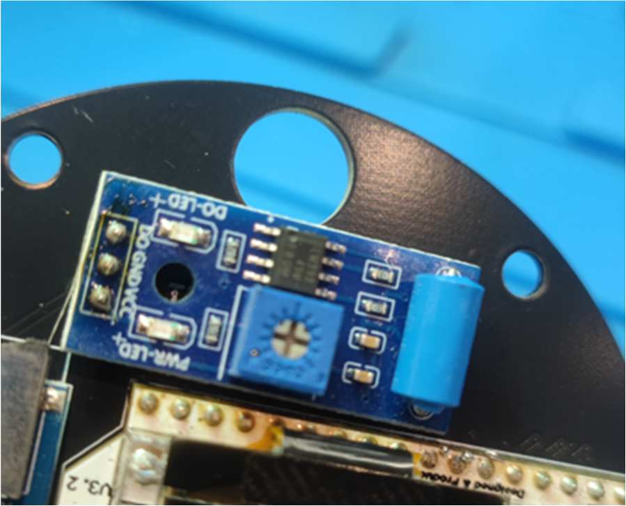
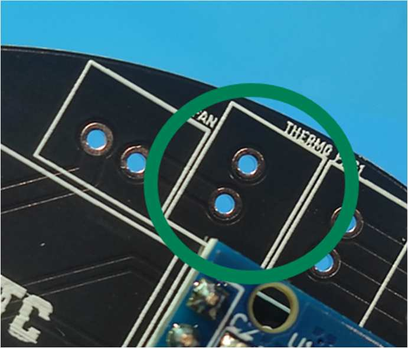

SD card module


RTC clock and tamper sensor module


NOTE: the JST connector location called PAS (both sides of the PCB) is not used.
When a thermal switch is used, it connects to the THERMO JST connector. If the thermal switch only comes with bare wires, you can leave out the JST connector and solder the wires directly to the location called THERMO.
